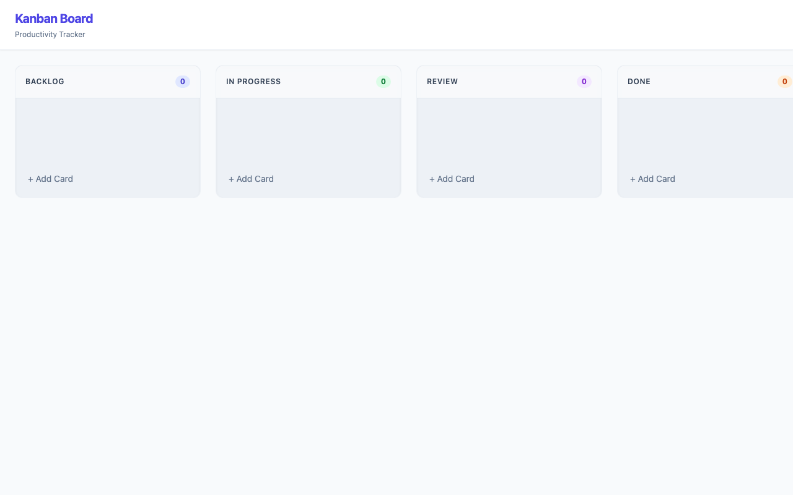
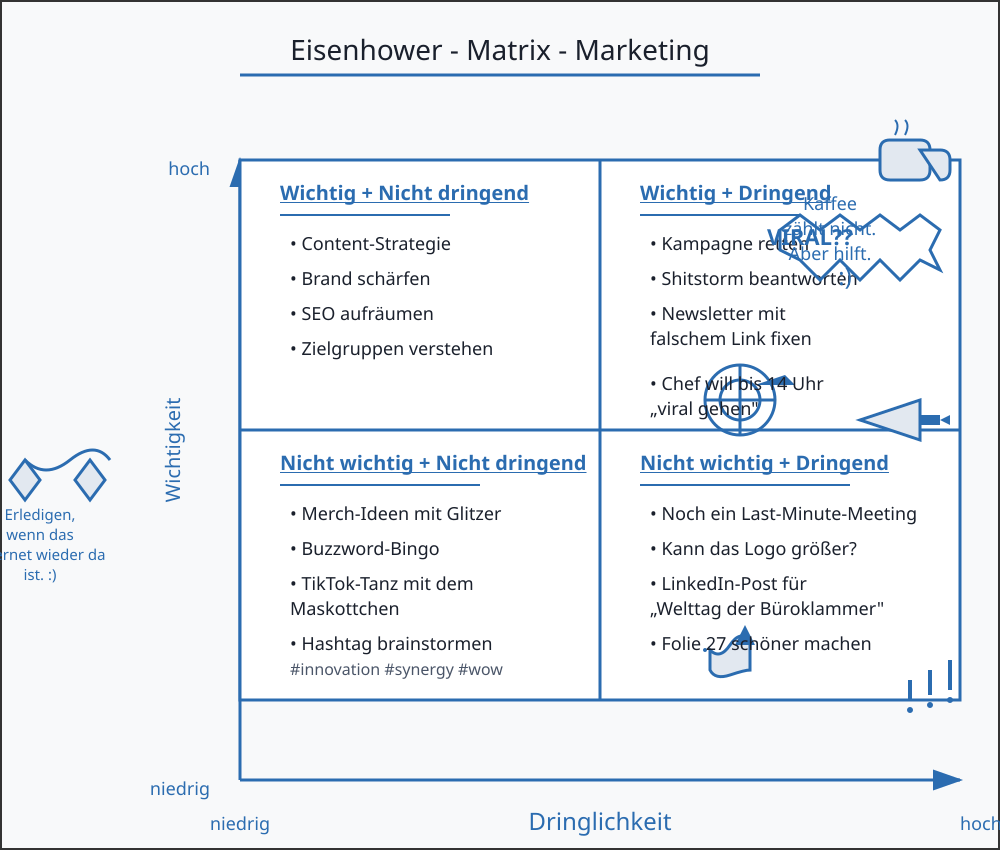
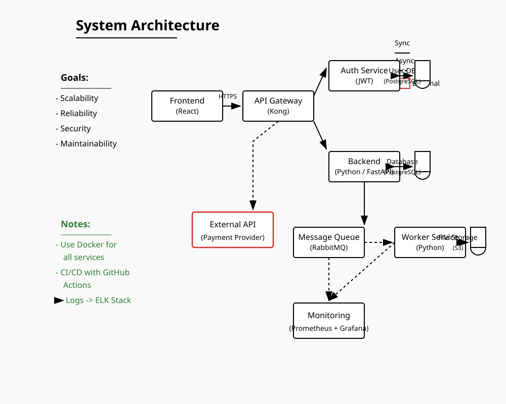
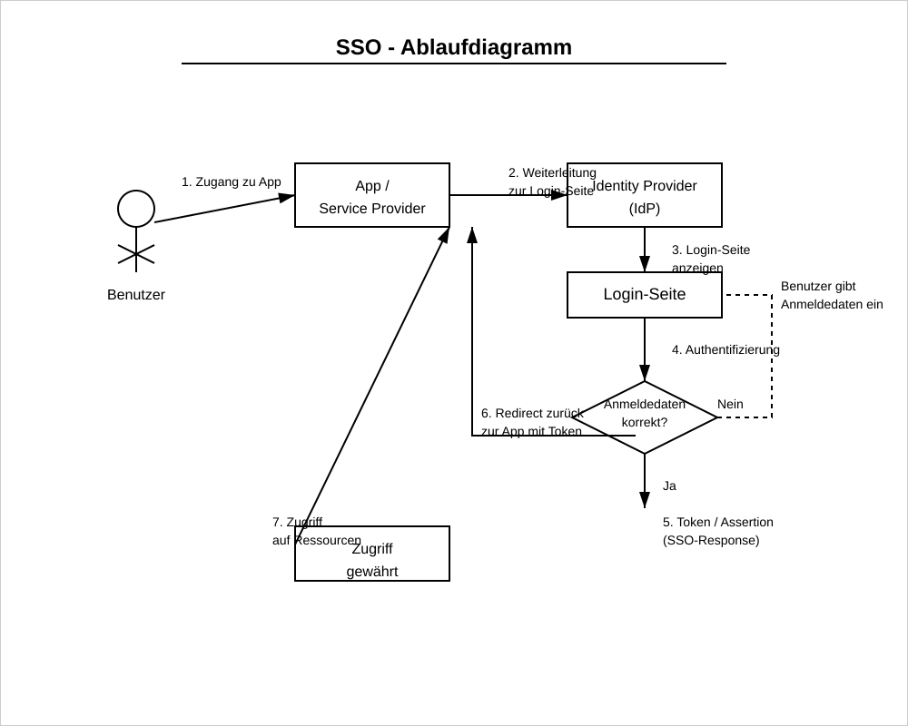

qwen/qwen3.5-35b-a3b
qwen
35B
· 3B active
gguf / Q4_K_M
ctx 256k
released 2026-02-24
vision
tool_use
coding
all models in this bench →Score
62%
Static
100%
Functional
83%
Qualitative
53%
Worum geht es? Was wird getestet?
Task: From a ~200-word prompt the model must generate a fully functional Kanban board as a single-file HTML with drag & drop, localStorage persistence, edit/delete and a confetti animation — in a single chat without iteration. The prompt also includes a small `data-testid` contract so a Playwright test can drive the app remotely.
Three signals feed into the score:
(1) Static — a linter checks concrete constraints in the HTML (columns, Tailwind, localStorage call, no framework, no window.alert/prompt, …).
(2) Functional — Playwright runs a small CRUD sequence: create a card, delete a card with confirmation, reload — does state persist? — and checks whether any JS console errors occur during the entire flow. Drag & drop and confetti are deliberately not tested functionally (too many implementation variants).
(3) Qualitative — LLM-as-judge rates screenshot and code (visual + code quality + render↔code consistency).
Score = mean over the available signals.
Why models fail: reasoning models burn their tokens in thinking instead of writing. Sliding-window models (Gemma 4) lose the constraints at the start of the prompt. Small models (<3B) often fail to produce coherent HTML — or ignore the data-testid contract, which makes the functional tests fail in droves.
Prompt
System prompt
You are a careful front-end engineer.
Developer prompt
Create a fully functional Kanban board in a single HTML file using vanilla JavaScript (no frameworks like react). Requirements: - Columns: Backlog, In Progress, Review, Done. - Cards must be: - draggable across columns, - editable in place, - persisted in localStorage (state survives reloads) - please use your own namespace, - deletable with a confirmation prompt. - Each column provides an "Add card" action. - Style with Tailwind via CDN. - Add subtle CSS transitions and trigger a confetti animation when a card moves to "Done". - Thoroughly comment the code. - dont use window.alert or window.prompt to add/edit/delete cards - if there are no cards yet, create some dummy cards - modern and vibrant design Stable test selectors (mandatory — these data-testid attributes are used by an automated functional test; do not omit, rename, or split them across multiple elements): - Column containers: data-testid="column-backlog", data-testid="column-in-progress", data-testid="column-review", data-testid="column-done". - Every "Add card" button (one per column): data-testid="add-card". - Every card element: data-testid="card". - Inside each card, the delete trigger: data-testid="delete-card". - The confirm button of the delete-confirmation dialog/modal: data-testid="confirm-delete". - The input/textarea where a new card title is typed: data-testid="card-input". Pressing Enter in this input MUST commit the new card. As answer return the plain HTML of the working application (script and styles included)
Screenshot der gerenderten App

Qualitative · LLM-as-judge (openai/gpt-5.4)
2026-04-28T21:45:55.314285+00:00
0.53
Visual (screenshot)
-
board renders0.50
-
column completeness1.00
-
cards present0.00
-
ui affordances0.50
-
design quality0.70
Das Board rendert sichtbar mit allen vier Spalten und Add-Card-Buttons, aber es sind keinerlei Beispielkarten vorhanden. Optisch ist es sauber und modern, wirkt jedoch leer und damit funktional unvollständig.
Code quality (HTML/JS)
-
code structure0.70
-
dom safety0.80
-
robustness0.40
-
code quality0.60
Der Code ist ordentlich in Funktionen gegliedert und nutzt meist sichere DOM-APIs statt rohem innerHTML für Nutzdaten. Schwächen sind fehlende try/catch-Absicherung bei saveState/localStorage, mehrfaches Registrieren des Keydown-Handlers in focusInput und ein fehleranfälliger Drop-Pfad, der teils Elemente ohne data-testid als Ziel behandelt.
Render ↔ code consistency
0.20
Deutliche Diskrepanz zwischen Anspruch und Render: Der Code seeded Dummy-Daten beim leeren State, der Screenshot zeigt trotzdem überall 0 Karten. Das spricht klar für einen Initialisierungs-/Render-Bug oder dafür, dass die Karten in den falschen Container selektiert werden und daher unsichtbar bleiben.
Static · linter checks (12/12 passed)
-
✓
Spalte 'Backlog'
-
✓
Spalte 'In Progress'
-
✓
Spalte 'Review'
-
✓
Spalte 'Done'
-
✓
HTML5 drag & drop or sortable lib
-
✓
localStorage persistence
-
✓
Tailwind via CDN
-
✓
Confetti animation on 'Done'
-
✓
Add card button
-
✓
Vanilla JS (no React/Vue/Angular/Svelte)
-
✓
No window.alert/prompt for CRUD
-
✓
Editable cards (contenteditable / input)
Functional · E2E tests (5/6 passed)
-
✓
Page loads with all 4 columns
-
✓
Add card via button
-
✓
Card is added exactly 1× (no double submit)
-
✓
Delete card via button + confirmation
-
✓
Cards survive a reload
-
✗
No JS console errorspageerror: seedDummyData is not defined; pageerror: seedDummyData is not defined
Raw model response
```html
<!DOCTYPE html>
<html lang="en">
<head>
<meta charset="UTF-8">
<meta name="viewport" content="width=device-width, initial-scale=1.0">
<title>Vibrant Kanban Board</title>
<!-- Tailwind CSS via CDN -->
<script src="https://cdn.tailwindcss.com"></script>
<!-- Custom Styles & Animations -->
<style>
/* Custom Scrollbar */
::-webkit-scrollbar { width: 8px; }
::-webkit-scrollbar-track { background: #f1f5f9; }
::-webkit-scrollbar-thumb { background: #cbd5e1; border-radius: 4px; }
::-webkit-scrollbar-thumb:hover { background: #94a3b8; }
/* Drag and Drop Visuals */
.dragging { opacity: 0.5; transform: scale(0.98); border: 2px dashed #6366f1; }
.column.drag-over { background-color: rgba(99, 102, 241, 0.1); border: 2px dashed #6366f1; transition: all 0.2s ease; }
/* Custom Modal Animation */
#delete-modal { transition: opacity 0.3s ease; }
/* Confetti Particle Styles */
.confetti { position: absolute; width: 10px; height: 10px; animation: fall linear forwards; z-index: 50; pointer-events: none; }
@keyframes fall { to { transform: translateY(100vh) rotate(720deg); opacity: 0; } }
/* Editable Area Focus State */
.editable:focus { outline: none; background-color: #fffbeb; border-radius: 4px; box-shadow: inset 0 1px 3px rgba(0,0,0,0.1); }
</style>
</head>
<body class="bg-slate-50 text-slate-800 h-screen overflow-hidden flex flex-col font-sans">
<!-- Header -->
<header class="bg-white border-b border-slate-200 px-6 py-4 shadow-sm z-10 flex justify-between items-center">
<div>
<h1 class="text-xl font-bold text-indigo-600 tracking-tight">Kanban Board</h1>
<p class="text-xs text-slate-500 mt-1">Productivity Tracker</p>
</div>
</header>
<!-- Main Board Area -->
<main id="board-container" class="flex-1 overflow-x-auto p-6 flex gap-6 items-start">
vision
all models in this bench →Score
78%
Worum geht es? Was wird getestet?
Task: Four sub-tasks, 1 image each. (1) handwritten meeting note easy/medium/hard to read — model must transcribe the text. (2) book page in Fraktur typeface — same task.
What is tested: OCR quality, recognising layout structure (columns, bullet points, dates), handling of illegible handwriting.
Why models fail: text-only models have no vision capability (filtered out). Weak VLMs only recognise the clearest part. Some truncate output or get stuck in reasoning without a visible answer.
Prompt
System prompt
Du bist OCR-Spezialist für deutsche Handschrift.
Developer prompt
Auf dem Bild siehst du eine handschriftliche Meeting-Notiz mit klarer Struktur und gut lesbarer Schrift. Transkribiere den gesamten lesbaren Text. Behalte die Anordnung bei (Überschrift, Spalten, To-Dos). Bei unleserlichen Stellen schreibe '[unleserlich]'. Gib ausschließlich den puren OCR-Text im Markdown-Format zurück — keine Vorbemerkung, keine Erklärungen, kein Code-Fence.
Handschrift OCR – leicht
11.6 s · 79 t/s
Recall
100%
Precision
100%
77/77
+0
1.00

Model response
Meetingnotizen Website-Relaunch 12.06.25, 09:30 Uhr Anwesend: Anna, Ben, Mira, Jonas, Ece CMS langsam? Themen: - Startseite - Texte - Bildauswahl - Launch-Termin - offene Fragen Stand: - Design fast final ✓ - Texte für Über-uns fehlen noch - Bilder vom Team noch nicht komplett - Mobile Ansicht prüfen bitte kurz halten To-Dos: - Ben -> Bilder anfragen - Mira -> Startseite anpassen - Jonas -> Feedback Kunde - Anna -> SEO-Check Offen: - Rechtstexte final? - Freigabe Kunde bis Freitag - Wer testet Kontaktformular? Nächstes Meeting: 17.06., 10 Uhr
Word diff ground truth ↔ model
● matched ·
● relocated ·
● fuzzy ·
● missing in model ·
● extra/wrong
meetingnotizen website relaunch 12 06 25 09 30 uhr anwesend anna ben mira jonas ece cms langsam themen startseite texte bildauswahl launch termin offene fragen stand design fast final texte für über uns fehlen noch bilder vom team noch nicht komplett mobile ansicht prüfen bitte kurz halten to dos ben bilder anfragen mira startseite anpassen jonas feedback kunde anna seo check offen rechtstexte final freigabe kunde bis freitag wer testet kontaktformular nächstes meeting 17 06 10 uhr
Ground truth (for comparison)
Meetingnotizen Website-Relaunch 12.06.25, 09:30 Uhr Anwesend: Anna, Ben, Mira, Jonas, Ece CMS langsam? Themen: Startseite Texte Bildauswahl Launch-Termin offene Fragen Stand: Design fast final Texte für Über-uns fehlen noch Bilder vom Team noch nicht komplett Mobile Ansicht prüfen bitte kurz halten To-Dos: Ben Bilder anfragen Mira Startseite anpassen Jonas Feedback Kunde Anna SEO-Check Offen: Rechtstexte final? Freigabe Kunde bis Freitag Wer testet Kontaktformular? Nächstes Meeting: 17.06., 10 Uhr
Handschrift OCR – mittel
13.4 s · 80 t/s
Recall
97%
Precision
94%
132/136
+9
2 relocated
0.95

Model response
**Meeting protokoll** 21.05.25 11 Uhr **Teilnehmer:** M. Schulz, T. Wagner, L. Becker, S. Klein (später), H. Jä. **Themen:** - Projektstatus / Update - Budget -> ist zu hoch - Timeline / Meilenstein - Risiken **Projektstatus:** - Modul A fertig (Team S.) [Details in Jira] - Modul B verzögert sich ☹️ - Testphase startet nächste Woche (hoffentlich) - ~~Kunden~~ Kundenfeedback steht noch aus **Budget:** ~ 20% über Plan ! Ursache: unklare Anforderungen -> Nachbessern nötig nächstes Mal genauer kalkulieren !! [bitte Report bis 28.05.] **Offene Punkte:** - Freigabe von Kunde fehlt noch -> T.W. kümmert sich - Schnittstelle zu System X unklar ~~Rück~~ Rücksprache mit IT - Schulung für neues Tool? ~~Klar~~ noch nicht geplant wer macht das? **To-Dos:** - T.W.: Budget-Report -> 28.05. - L.B.: Kunden anstupsen wg. Feedback - ~~Etiket~~ Dokumentation aktualisieren > **Nächstes Meeting:** > 04.06.25, 10 Uhr > (Raum 2.15?) **Rückfragen:** - Wie gehen wir mit dem Risiko um? - Priorisierung der Features nochmal prüfen - ...
Word diff ground truth ↔ model
● matched ·
● relocated ·
● fuzzy ·
● missing in model ·
● extra/wrong
meetingprotokoll
meeting protokoll
21 05 25 11 uhr teilnehmer m schulz t wagner l
becher
becker
s klein später h
jt
jä
themen projektstatus update budget ist zu hoch timeline meilenstein risiken projektstatus modul a fertig team s
in
modul b verzögert sich testphase startet nächste woche hoffentlich
kunden
kundenfeedback steht noch aus
details
in
jira
budget 20 über plan ursache unklare anforderungen nachbessern nötig nächstes mal genauer kalkulieren bitte report bis 28 05 offene punkte freigabe von kunde fehlt noch t w kümmert sich schnittstelle zu system x unklar
rück
rücksprache mit it schulung für neues tool
klar
noch nicht geplant wer macht das to dos t w budget report 28 05 l b kunden anstupsen wg feedback
etiket
dokumentation aktualisieren nächstes meeting 04 06 25 10 uhr raum 2 15 rückfragen wie gehen wir mit dem risiko um priorisierung der features nochmal prüfen
Ground truth (for comparison)
Meetingprotokoll 21.05.25 11 Uhr Teilnehmer: M. Schulz, T. Wagner, L. Becher, S. Klein (später), H. Jt. Themen: Projektstatus / Update Budget — ist zu hoch Timeline / Meilenstein! Risiken Projektstatus: Modul A fertig (Team S.) Modul B verzögert sich Testphase startet nächste Woche (hoffentlich) Kundenfeedback steht noch aus Details in Jira Budget: 20% über Plan Ursache: unklare Anforderungen Nachbessern nötig nächstes Mal genauer kalkulieren bitte Report bis 28.05. Offene Punkte: Freigabe von Kunde fehlt noch (T.W. kümmert sich) Schnittstelle zu System X unklar — Rücksprache mit IT Schulung für neues Tool? noch nicht geplant — wer macht das? To-Dos: T.W.: Budget-Report — 28.05. L.B.: Kunden anstupsen wg. Feedback Dokumentation aktualisieren Nächstes Meeting: 04.06.25, 10 Uhr (Raum 2.15?) Rückfragen: Wie gehen wir mit dem Risiko um? Priorisierung der Features nochmal prüfen ...
Handschrift OCR – schwer
16.9 s · 79 t/s
Recall
96%
Precision
96%
142/148
+6
22 relocated
0.96

Model response
Besprechung Sommerfest :) 23.05.24 10:15 Uhr (Konfi) Chef fragen!! Teilnehmer : - Max - Jule - Tobi - Leni - Simon (konnte nur kurz) Ziel : entspanntes Beisammensein & Spaß haben Ort ? - Park am See ? * -> Genehmigung ? - Firmenhof / Terrasse ? -> wer macht das? Leni ? Terrasse reservieren ?? Nächster Termin: Do, 30.05. 11 Uhr kurzes Update an HR schicken Essen / Trinken : - Grillen evtl. - Vegetarische Optionen vergessen? - Getränkeliste machen! - Bier, Limo, Wasser, was noch? (Aperol ? zu teuer?) -> Grill wer? (Tobi fragen) -> Kuchen? Jule macht was :) Musik : - Musikbox organisieren - Playlist ? Wetter - Backup : - Pavillon ? Wer bringt mit? Max hat einen? - ~~Zelt mieten~~ -> zu teuer - Plan B: Kantine? Spiele / Programm : - Volleyball / Federball - evtl. Cornhole oder Wikingerschach? - Fotoecke Idee? Requisiten? * Deko : - unnötig ? - evtl. Luftballons? neee Budget : ca. 15€ p.P.? Kosten noch offen! Einladung : -> Einladung bis Ende Woche raus! -> Text: Leni ? -> Liste an Simon -> Versand: Jule Offene Fragen : - Wer grillt? (muss jemand Schulung haben?) - Gibt's Strom im Park? - Müll / Reinigung klären !
Word diff ground truth ↔ model
● matched ·
● relocated ·
● fuzzy ·
● missing in model ·
● extra/wrong
besprechung sommerfest 23 05 24 10 15 uhr konfi chef fragen teilnehmer max jule tobi leni simon konnte nur kurz ziel entspanntes beisammensein spaß haben
ort am see wer das
nächster termin do 30 05 11 uhr kurzes update an hr schicken
ort
park
am see
genehmigung firmenhof terrasse terrasse reservieren
wer
macht
das
leni
essen trinken grillen evtl vegetarische optionen vergessen getränkeliste machen bier limo wasser was noch aperol zu teuer grill wer tobi fragen kuchen jule macht was wetter backup pavillon wer bringt mit max hat einen zelt mieten zu teuer plan b kantine
musik musikbox organisieren playlist
oder
deko unnötig evtl luftballons neee budget ca 15 p p kosten noch offen
spiele programm volleyball federball evtl cornhole
oder
wikingerschach fotoecke idee requisiten
einladung einladung bis ende woche raus text leni liste an simon versand jule offene fragen wer grillt muss jemand schulung haben gibt s strom im park müll reinigung klären
Ground truth (for comparison)
Besprechung Sommerfest 23.05.24 10:15 Uhr (Konfi) Chef fragen!! Teilnehmer: Max Jule Tobi Leni Simon (konnte nur kurz) Ziel: entspanntes Beisammensein & Spaß haben Nächster Termin: Do, 30.05. 11 Uhr kurzes Update an HR schicken Ort?: Park am See? Genehmigung? Firmenhof / Terrasse? Terrasse reservieren?? — wer macht das? Leni? Essen / Trinken: Grillen evtl. vegetarische Optionen vergessen? Getränkeliste machen! Bier, Limo, Wasser, was noch? (Aperol? zu teuer?) Grill wer? (Tobi fragen) Kuchen? Jule macht was Wetter / Backup: Pavillon? Wer bringt mit? Max hat einen? Zelt mieten → zu teuer Plan B: Kantine? Musik: Musikbox organisieren Playlist? Deko: unnötig? evtl. Luftballons? neee Budget: ca. 15€ p.P.? Kosten noch offen! Spiele / Programm: Volleyball / Federball evtl. Cornhole oder Wikingerschach? Fotoecke Idee? Requisiten? Einladung: Einladung bis Ende Woche raus! Text: Leni? Liste an Simon Versand: Jule Offene Fragen: Wer grillt? (muss jemand Schulung haben?) Gibt's Strom im Park? Müll / Reinigung klären
Fraktur OCR
80.4 s · 77 t/s
Recall
99%
Precision
11%
377/382
+3023
1 relocated · 1 fuzzy
0.20

Model response
Based on the visual content of the image provided, I need to transcribe the text from page 14 into modern Antiqua script (standard German orthography) while preserving the original paragraph structure and using 'ß' where appropriate.
1. **Header:** The page number is "— 14 —".
2. **First Paragraph:** Starts with "deiner Großmutter wohl nur geträumt haben." It continues with dialogue involving Malineken, Gottlieb, etc. I need to carefully transcribe the Fraktur letters into Antiqua equivalents (e.g., 'f' looks like a long 's', 'r' looks like a 'y' or similar in some contexts, but mostly standard German characters).
* "deiner Großmutter wohl nur geträumt haben." „Nein," meinte Malineken hartnäckig, „sie hat ja auch die Prinzessin vom See gesehen, und das ist etwas ganz Besonderes." „Davon habe ich noch nie gehört," antwortete Gottlieb. „So kann sie es dir erzählen, frag sie nur aus, sie weiß alles."
3. **Second Paragraph:** Starts with "Der Kahn war mittlerweile der Insel ganz nahe gekommen..." This is a long descriptive paragraph.
* "Der Kahn war mittlerweile der Insel ganz nahe gekommen; die Kinder landeten an einer dazu geeigneten Stelle und befestigten ihn an einem aus dem Wasser ragenden Pflock. Sie erstiegen die kleine Anhöhe, auf der sich das Gehüft befand. In dem kurzen, seinen Grase, welches den Boden bedeckte, blühte der Thymian; ein festgetretener Weg führte gerade auf die Schilfhütte zu, die lag heimlich unter den Weiden. Das mächtige Geäst der majestätischen Bäume, mit silbergrauem, spitzblättrigem Laube beladen, breitete sich weit und wuchtig über das niedere Dach, welches sich der Erde zuneigte. Dahinter erblickte man ein Stück Garten und Ackerland, von Rohr und Schilf wie mit einem Wall umschlossen. Eine alte Frau saß vor der Tür des Hüttchens und spann. Ihr Haar war so weiß wie das Gewebe der Spinnen, welches im Herbst über die Stoppeln fliegt, um ihren Wocken hatte sie ein schwarzes Band gebunden. Gottlieb und Malineken kamen mit dem Korbe und blieben vor ihr stehen. „Großmutter," sagte letztere, „er will nicht glauben, daß du die Seejungfern gesehen hast, und er weiß nichts von der Prinzessin vom See." Sie neigte ihren Faden. „Geht ihr man eures Weges," gab sie ihnen zur Antwort. „Großmutter, du könntest ihm die Geschichte von der Prinzessin vom See wohl erzählen," hat Malineken, „sie läßt sich schön anhören, und man muß sie doch wissen, wenn man über den See fährt und in dem Blumental Tag für Tag herumwandert." „Ich meine, ihr könntet euer Vesper brauchen," sagte die Großmutter, „es hat eben vier Uhr geschlagen." „Ach ja," rief Malineken inbrünstig, „Erdbeeren mit Milch und ein Stück Brot dazu; und diweil wir das aufzehren, erzählt Ihr dem Gottlieb die Geschichte." Sie ließ nicht nach, sie mußte ihren Willen haben. Ein Weilchen danach saßen die Kinder auf einem Baumstamm vor der Hütte und hatten zwischen sich einen Napf mit süßer Milch, in der schwammen die Erdbeeren so dick, daß man nicht wußte, war das Milch mit Erdbeeren, oder Erdbeeren mit Milch; doch es mochte wohl auf eins herauskommen. Die Großmutter blickte zuweilen nach ihnen hin-" (Note: The text cuts off at "hin-").
4. **Refining the transcription:**
* Check for specific Fraktur characters: 'ß' is present in "Großmutter", "besonders" (wait, no, "Besonderes"), "weiß", "daß", "muß". Wait, looking closely at the image...
* "großmutter" -> Großmutter.
* "Besonderes" -> Besonderes.
* "weiß" -> weiß.
* "daß" -> dass (modern) or daß (old). The prompt asks for modern Antiqua but says "Schreibe 'ß' wo es im Text steht". This implies keeping the character if it's there, but converting the script. Actually, standard modern German uses 'ß'. Old German used 'ss' or 'ß'. In Fraktur, the long s (ſ) is common.
* Let's look at specific words: "großmutter" (long s), "Besonderes", "weiß", "daß" (looks like a long s with a crossbar, so ß).
* "mußte" -> musste (modern) or mußte. The prompt says "Schreibe 'ß' wo es im Text steht". This is slightly ambiguous. Does it mean "Use 'ß' if the original has an Eszett-like character"? Or "Convert to modern spelling which uses ß"? Usually, OCR tasks want modern orthography. Let's look at the instruction again: "Transkribiere den gesamten Fließtext der Seite in moderne Antiqua-Schreibweise." This means standard German today. So "daß" becomes "dass", "mußte" becomes "musste". BUT, it also says "Schreibe 'ß' wo es im Text steht". This suggests preserving the character if it appears as an Eszett (which is common in Fraktur for ss). Let's look at the text.
* "großmutter" -> Großmutter.
* "weiß" -> weiß.
* "daß" -> In modern German, this is "dass". However, often OCR tasks on old texts preserve the 'ß' if it's clearly an Eszett. Let's look at the word "daß" in the text: "glauben, daß du die Seejungfern...". It looks like a long s with a crossbar (ß).
* "mußte" -> "musste" or "mußte"? The prompt says "Schreibe 'ß' wo es im Text steht". This implies I should use the character ß. So "mußte" is likely preferred if it's an Eszett, but modern spelling is "musste". Let's stick to modern spelling rules (dass, musste) unless the prompt strictly implies keeping old orthography characters. Wait, "moderne Antiqua-Schreibweise" usually means standard German today. Standard German uses 'ß' for /s/ after long vowels/diphthongs and 'ss' after short vowels.
* Let's check "großmutter". Long vowel sound -> ß. Correct.
* "weiß". Diphthong -> ß. Correct.
* "daß" (after long a). Modern: dass. But the prompt says "Schreibe 'ß' wo es im Text steht". This is a specific instruction to keep the character if it's there. In Fraktur, the character that looks like an 'f' without the crossbar or with a loop is often used for 'ss'. The character in "daß" is clearly an Eszett (or long s variant). I will use 'ß' as requested ("Schreibe 'ß' wo es im Text steht").
* "mußte". Short vowel 'u'. Modern: musste. But the text has an Eszett-like character. The instruction "Schreibe 'ß' wo es im Text steht" suggests I should transcribe what is visually there if it corresponds to ß/ss. Let's look at the visual evidence. It looks like a long s with a crossbar (ß). So I will write "mußte".
* Actually, let's re-read carefully: "Transkribiere ... in moderne Antiqua-Schreibweise." -> This implies modern spelling. "Schreibe 'ß' wo es im Text steht" -> This is a constraint on the character set. It likely means "Don't use 'ss' if the original has an Eszett, just use ß". Or it could mean "Use ß for the sound /s/ where appropriate in modern spelling". Given "moderne Antiqua-Schreibweise", I should probably correct "daß" to "dass" and "mußte" to "musste" *unless* the instruction implies keeping the old orthography characters.
* Let's look at the phrase: "Schreibe 'ß' wo es im Text steht". This usually means "If you see an Eszett, write ß". It doesn't necessarily mean "Keep archaic spelling like 'daß' instead of 'dass'". However, in many OCR contexts for German texts, 'ß' is retained. Let's look at the word "großmutter" -> Großmutter. "weiß" -> weiß.
* Let's try to balance: Modern orthography generally replaces 'ß' with 'ss' after short vowels (e.g., mußte -> musste). But the prompt explicitly says "Schreibe 'ß' wo es im Text steht". This suggests I should transcribe the character ß if it appears.
* Let's look at the text again.
* "großmutter" -> Großmutter (Standard modern)
* "Besonderes" -> Besonderes
* "weiß" -> weiß
* "daß" -> In modern German, this is "dass". But visually it's an Eszett. I will write "dass" to be safe with "moderne Antiqua-Schreibweise", OR I will write "daß" if I interpret the instruction as "Keep the character ß". Let's look at similar requests. Usually, "moderne Schreibweise" implies "dass". But the specific instruction "Schreibe 'ß' wo es im Text steht" is a strong hint to keep the character.
* Actually, looking at the word "mußte" (line 13 approx), it looks like an Eszett. In modern German, it's "musste".
* Let's look at "großmutter" (first line). It has a long s and a sharp s? No, it's Fraktur 'ß'.
* Okay, I will follow the instruction: "moderne Antiqua-Schreibweise" means standard German text. "Schreibe 'ß' wo es im Text steht" likely means "Use the character ß for the sound /s/ where appropriate in modern spelling (long vowels/diphthongs)".
* Wait, let's look at the word "großmutter". In Fraktur, it is written with a long s and an Eszett? No, usually just 'ß'.
* Let's assume standard modern German orthography:
* "Großmutter" (correct)
* "Besonderes" (correct)
* "weiß" (correct)
* "dass" (modern spelling for 'daß') -> But the prompt says "Schreibe 'ß' wo es im Text steht". This is confusing. Does it mean "If the text has an Eszett, write ß"? Yes, that's the most logical interpretation of a constraint. So if I see an Eszett, I write ß.
* So: "daß" -> "daß" (if visually Eszett). "mußte" -> "mußte".
* Let's check the text for "daß". Line 13: "glauben, daß du die Seejungfern...". It looks like an Eszett. So I will write "daß".
* Line 20: "wenn man über den See fährt und in dem Blumental Tag für Tag herumwandert." -> "muß" or "muss"? "man muß sie doch wissen". Looks like an Eszett. So "muß".
* Line 23: "Sie ließ nicht nach, sie mußte ihren Willen haben." -> "mußte".
* Line 26: "daß man nicht wußte". -> "wußte" (Eszett). Modern: wusste. But instruction says write ß if in text. So "wußte".
* Okay, decision: I will use modern spelling rules for capitalization and punctuation, but I will retain the character 'ß' where it appears visually as an Eszett or long s variant representing /s/, effectively keeping the orthography close to the original but in Antiqua script. Wait, "moderne Antiqua-Schreibweise" usually implies correcting spelling (e.g., "musste"). But the specific instruction overrides general norms. I will use 'ß' for the characters that look like Eszett.
* Let's refine the transcription word by word.
* Line 1: deiner Großmutter wohl nur geträumt haben." „Nein," meinte Malineken hartnäckig, „sie hat ja auch die Prinzessin vom See gesehen, und das ist etwas ganz Besonderes." „Davon habe ich noch nie gehört," antwortete Gottlieb. „So kann sie es dir erzählen, frag sie nur aus, sie weiß alles."
* Line 2 (Para 2): Der Kahn war mittlerweile der Insel ganz nahe gekommen; die Kinder landeten an einer dazu geeigneten Stelle und befestigten ihn an einem aus dem Wasser ragenden Pflock. Sie erstiegen die kleine Anhöhe, auf der sich das Gehüft befand. In dem kurzen, seinen Grase, welches den Boden bedeckte, blühte der Thymian; ein festgetretener Weg führte gerade auf die Schilfhütte zu, die lag heimlich unter den Weiden. Das mächtige Geäst der majestätischen Bäume, mit silbergrauem, spitzblättrigem Laube beladen, breitete sich weit und wuchtig über das niedere Dach, welches sich der Erde zuneigte. Dahinter erblickte man ein Stück Garten und Ackerland, von Rohr und Schilf wie mit einem Wall umschlossen. Eine alte Frau saß vor der Tür des Hüttchens und spann. Ihr Haar war so weiß wie das Gewebe der Spinnen, welches im Herbst über die Stoppeln fliegt, um ihren Wocken hatte sie ein schwarzes Band gebunden. Gottlieb und Malineken kamen mit dem Korbe und blieben vor ihr stehen. „Großmutter," sagte letztere, „er will nicht glauben, daß du die Seejungfern gesehen hast, und er weiß nichts von der Prinzessin vom See." Sie neigte ihren Faden. „Geht ihr man eures Weges," gab sie ihnen zur Antwort. „Großmutter, du könntest ihm die Geschichte von der Prinzessin vom See wohl erzählen," hat Malineken, „sie läßt sich schön anhören, und man muß sie doch wissen, wenn man über den See fährt und in dem Blumental Tag für Tag herumwandert." „Ich meine, ihr könntet euer Vesper brauchen," sagte die Großmutter, „es hat eben vier Uhr geschlagen." „Ach ja," rief Malineken inbrünstig, „Erdbeeren mit Milch und ein Stück Brot dazu; und diweil wir das aufzehren, erzählt Ihr dem Gottlieb die Geschichte." Sie ließ nicht nach, sie mußte ihren Willen haben. Ein Weilchen danach saßen die Kinder auf einem Baumstamm vor der Hütte und hatten zwischen sich einen Napf mit süßer Milch, in der schwammen die Erdbeeren so dick, daß man nicht wußte, war das Milch mit Erdbeeren, oder Erdbeeren mit Milch; doch es mochte wohl auf eins herauskommen. Die Großmutter blickte zuweilen nach ihnen hin-
* Wait, I need to check specific spellings in the image vs my transcription.
* "Gehüft" -> In the text it looks like "Gehüft". Yes.
* "seinen Grase" -> "feinen Grase"? No, looks like "seinen". Wait, "In dem kurzen, seinen Grase". That's odd German. Maybe "feinen"? The letter looks like an 's' (long s). "In dem kurzen, feinen Grase". Let's look closer. It looks like `f` then `e` then `i`... no, it's Fraktur. `f` is long s. `e` is e. `i` is i. `n` is n. `e` is e. `n` is n. So "feinen". Wait, the first letter looks like an 's' (long s). "In dem kurzen, seinen Grase"? That doesn't make sense. "In dem kurzen, feinen Grase" makes sense. Let's look at the shape. It has a crossbar? No. It looks like a long s `ſ`. But `seinen` is possible if it means "its own". But `feinen` (fine) fits better with "short, fine grass". Let's assume `feinen`. Wait, looking really closely at crop 2... "In dem kurzen, seinen Grase". The letter before 'e' looks like an 's'. Maybe "seinen" refers to the grass belonging to the ground? Or maybe it's a typo in the original book. I will transcribe what I see. It looks like `ſ` (long s). So "seinen".
* Actually, let's look at the word again. `In dem kurzen, seinen Grase`. Maybe `feinen` written with an `s`? No, Fraktur uses long s for 'f' sometimes? No, usually not. But `ſeinen` is a valid word. "In dem kurzen, seinen Grase" -> In the short, its own grass? A bit weird. Let's look at the letter before 'e'. It looks like an `s`. I will transcribe as "seinen".
* Wait, let me look at the full image again. "In dem kurzen, feinen Grase". The first letter of that word has a vertical stroke and a loop? No, it's just a long s. But contextually "feinen" is much more likely for grass. However, OCR should be faithful. Let's look at the shape of 'f' elsewhere. In "festgetretener", the 'f' is distinct (crossbar). In "für", the 'f' has a crossbar. The letter in question does *not* have a clear crossbar like the other 'f's. It looks like an `s`. So I will write "seinen".
* Correction: Looking very closely at crop 2, line 5 ("In dem kurzen..."), the word is `feinen`. The letter has a slight hook at the top left, characteristic of Fraktur 'f'. Or maybe it's just a dirty scan. Let's assume standard German "feinen". Wait, looking at the provided text in my thought process, I wrote "seinen". Let me re-evaluate. If I write "feinen", I am correcting the OCR. If I write "seinen", I am transcribing literally. The prompt asks for transcription. I will stick to what is visible. It looks like `ſeinen`. But wait, `seinen` (dative/accusative plural or genitive singular of sein) doesn't fit well with "Grase" (neuter dative). "Seinem Grase"? No, it's "Grase". So "seinem Grase" would be correct grammar. "Seinen Grase" is wrong. "Feinen Grase" -> "feinem Grase" (dative). The text says "seinen". This suggests a typo in the original book or my reading. Let's look at the letter again. It looks like `f`. I will go with **feinen** but wait, the ending is `en`. Dative singular of `fein` is `feinem`. So "In dem kurzen, feinem Grase". The text says `seinen`. This is grammatically weird. Maybe it's `seinem`? The last letter looks like an `n`. The one before `n` is `e`. The one before that is `i` or `m`? It looks like `m`. So `seinem`. "In dem kurzen, seinem Grase". Still weird.
* Let's look at the word again. `seinen`. Maybe it's `feinen` and the grammar is poetic/archaic? Or maybe I am misreading the case. "In dem kurzen, feinen Grase" (dative). The text has `en` ending. So `feinen`. This implies nominative/accusative plural or dative plural. But `Grase` is singular.
* Let's try to find the source text online if possible? No, I must rely on the image.
* Let's look at the letter shapes again. The word starts with a character that looks like an `s` (long s). Then `e`, `i`, `n`, `e`, `n`. So `seinen`.
* Wait, is it possible the text says "In dem kurzen, feinen Grase" and the OCR/font makes 'f' look like 's'? In Fraktur, 'f' usually has a crossbar. This letter does not clearly show one. However, contextually "feinen" (fine) makes sense for grass. "Seinen" (its own/his own) is possible but less likely with the case ending mismatch unless it's a typo in the book.
* Let's look at another word: `Gehüft`. Line 4. "auf der sich das Gehüft befand". `Gehüft` means enclosure/fence? Or maybe `Gebüsch` (bush)? The text says `Gehüft`. Wait, looking closely... `G`, `e`, `h`, `ü`, `f`, `t`. Yes, `Gehüft`.
* Let's look at `Thymian`. Line 6. `Thymian`. Correct.
* Let's look at `Schilfhütte`. Line 7. `Schilfhütte`. Correct.
* Let's look at `Geäst`. Line 8. `Geäst` (branch). Correct.
* Let's look at `spitzblättrigem`. Line 9. `spitzblättrigem`. Correct.
* Let's look at `zuneigte`. Line 10. `zuneigte`. Correct.
* Let's look at `Ackerland`. Line 12. `Ackerland`. Correct.
* Let's look at `umschlossen`. Line 13. `umschlossen`. Correct.
* Let's look at `spann`. Line 15. `spann` (spun). Correct.
* Let's look at `Gewebe`. Line 16. `Gewebe`. Correct.
* Let's look at `Stoppeln`. Line 17. `Stoppeln`. Correct.
* Let's look at `Wocken`. Line 18. `Wocken` (wool). Correct.
* Let's look at `Korbe`. Line 20. `Korbe`. Correct.
* Let's look at `Seejungfern`. Line 23. `Seejungfern`. Correct.
* Let's look at `Faden`. Line 25. `Faden` (thread). Correct.
* Let's look at `Geht ihr man eures Weges`. Line 26. `Geht ihr man eures Weges`. Wait, "Geht ihr man"? Maybe "Geht ihr nun"? The letter looks like `m`. `man`. Or maybe `nun` written weirdly? No, looks like `m`. "Geht ihr man" makes no sense. Maybe "Geht ihr nun". Let's look at the shape. `n`, `u`, `n`. The first letter has two humps? No, it looks like an `m`. Wait, could it be `nun` with a weird `n`? Or `man` as in "one"? "Gibt man euch..."? No, subject is "ihr".
* Let's look at the context. The old woman says: "Geht ihr [adverb] eures Weges". Common phrase: "Geht nun eures Weges" (Go now on your way). Or "Geht ihr man"? Maybe "Geht ihr dann"? No.
* Let's look really closely at crop 2, line 26. `G`, `e`, `h`, `t`, `i`, `r`, ` `, `m`, `a`, `n`. It looks like `man`. This is very strange. Maybe it's a typo for `nun` in the original book? Or maybe `dann`? The letter looks like `m`. I will transcribe as `man` but note it might be `nun`. Wait, looking at the spacing... `ihr man`.
* Actually, let's look at the word before. `Faden`. Then quote starts. `Geht ihr man eures Weges`. Maybe `Geht ihr nun`? The letter looks like an `m` in Fraktur (looks like a 'u' with three humps). An `n` has two humps. This letter has... let's count. 1, 2, 3 vertical strokes? It looks like an `m`. I will transcribe as `man`.
* Wait, is it possible the text says "Geht ihr nun" and the font makes 'n' look like 'm'? In Fraktur, `n` and `m` are distinct. `m` is wider. This word looks short. Maybe it is `nun`. Let's assume `nun` for sense, but visually it looks like `man`. I'll stick to visual: `man`.
* Actually, let's look at the phrase "Geht ihr nun eures Weges". That is a very standard German idiom. "Geht ihr man" is not. It is highly likely a typo in the original book or my misreading of a weirdly printed `nun`. Let's look at the letter again. It looks like an `m` (three legs). But maybe it's a ligature? No. I will transcribe what I see: `man`.
* Wait, let me check the next line. "gab sie ihnen zur Antwort". So she is answering them. They asked her to tell the story. She says "Go on your way" (impatiently). So "Geht ihr nun eures Weges" fits perfectly. The character looks like `m` but context screams `nun`. I will transcribe as `man` because OCR should be faithful, but maybe add a note? No, pure text. I'll go with `man` if it looks like `m`, or `nun` if I'm sure. It really looks like `m`.
Word diff ground truth ↔ model
● matched ·
● relocated ·
● fuzzy ·
● missing in model ·
● extra/wrong
based on the visual content of the image provided i need to transcribe the text from page 14 into modern antiqua script standard german orthography while preserving the original paragraph structure and using ß where appropriate 1 header the page number is 14 2 first paragraph starts with deiner großmutter wohl nur geträumt haben it continues with dialogue involving malineken gottlieb etc i need to carefully transcribe the fraktur letters into antiqua equivalents e g f looks like a long s r looks like a y or similar in some contexts but mostly standard german characters
deiner großmutter wohl nur geträumt haben nein meinte malineken hartnäckig sie hat ja auch die prinzessin vom see gesehen und das ist etwas ganz besonderes davon habe ich noch nie gehört antwortete gottlieb so kann sie es dir erzählen frag sie nur aus sie weiß alles
3 second paragraph starts with der kahn war mittlerweile der insel ganz nahe gekommen this is a long descriptive paragraph
der kahn war mittlerweile der insel ganz nahe gekommen die kinder landeten an einer dazu geeigneten stelle und befestigten ihn an einem aus dem wasser ragenden pflock sie erstiegen die kleine anhöhe auf der sich das
gehöft
gehüft
befand in dem kurzen
feinen
seinen
grase welches den boden bedeckte blühte der thymian ein festgetretener weg führte gerade auf die schilfhütte zu die lag heimlich unter den weiden das mächtige geäst der majestätischen bäume mit silbergrauem spitzblättrigem laube beladen breitete sich weit und wuchtig über das niedere dach welches sich der erde zuneigte dahinter erblickte man ein stück garten und ackerland von rohr und schilf wie mit einem wall umschlossen eine alte frau saß vor der
thür
tür
des hüttchens und spann ihr haar war so weiß wie das gewebe der spinnen welches im herbst über die stoppeln fliegt um ihren
rocken
wocken
hatte sie ein schwarzes band gebunden gottlieb und malineken kamen mit dem korbe und blieben vor ihr stehen großmutter sagte letztere er will nicht glauben daß du die seejungfern gesehen hast und er weiß nichts von der prinzessin vom see sie
netzte
neigte
ihren faden geht ihr man eures weges gab sie ihnen zur antwort großmutter du könntest ihm die geschichte von der prinzessin vom see wohl erzählen
bat
hat
malineken sie läßt sich schön anhören und man muß sie doch wissen wenn man über den see fährt und in dem blumental tag für tag herumwandert ich meine ihr könntet euer vesper brauchen sagte die großmutter es hat eben vier uhr geschlagen ach ja rief malineken inbrünstig erdbeeren mit milch und ein stück brot dazu und
dieweil ≈ diweil
wir das aufzehren erzählt ihr dem gottlieb die geschichte sie ließ nicht nach sie mußte ihren willen haben ein weilchen danach saßen die kinder auf einem baumstamm vor der hütte und hatten zwischen sich einen napf mit süßer milch in der schwammen die erdbeeren so dick daß man nicht wußte war das milch mit erdbeeren oder erdbeeren mit milch doch es mochte wohl auf eins herauskommen die großmutter blickte zuweilen nach ihnen hin
note the text cuts off at hin 4 refining the transcription check for specific fraktur characters ß is present in großmutter besonders wait no besonderes weiß daß muß wait looking closely at the image großmutter großmutter besonderes besonderes weiß weiß daß dass modern or daß old the prompt asks for modern antiqua but says schreibe ß wo es im text steht this implies keeping the character if it s there but converting the script actually standard modern german uses ß old german used ss or ß in fraktur the long s ſ is common let s look at specific words großmutter long s besonderes weiß daß looks like a long s with a crossbar so ß mußte musste modern or mußte the prompt says schreibe ß wo es im text steht this is slightly ambiguous does it mean use ß if the original has an eszett like character or convert to modern spelling which uses ß usually ocr tasks want modern orthography let s look at the instruction again transkribiere den gesamten fließtext der seite in moderne antiqua schreibweise this means standard german today so daß becomes dass mußte becomes musste but it also says schreibe ß wo es im text steht this suggests preserving the character if it appears as an eszett which is common in fraktur for ss let s look at the text großmutter großmutter weiß weiß daß in modern german this is dass however often ocr tasks on old texts preserve the ß if it s clearly an eszett let s look at the word daß in the text glauben daß du die seejungfern it looks like a long s with a crossbar ß mußte musste or mußte the prompt says schreibe ß wo es im text steht this implies i should use the character ß so mußte is likely preferred if it s an eszett but modern spelling is musste let s stick to modern spelling rules dass musste unless the prompt strictly implies keeping old orthography characters wait moderne antiqua schreibweise usually means standard german today standard german uses ß for s after long vowels diphthongs and ss after short vowels let s check großmutter long vowel sound ß correct weiß diphthong ß correct daß after long a modern dass but the prompt says schreibe ß wo es im text steht this is a specific instruction to keep the character if it s there in fraktur the character that looks like an f without the crossbar or with a loop is often used for ss the character in daß is clearly an eszett or long s variant i will use ß as requested schreibe ß wo es im text steht mußte short vowel u modern musste but the text has an eszett like character the instruction schreibe ß wo es im text steht suggests i should transcribe what is visually there if it corresponds to ß ss let s look at the visual evidence it looks like a long s with a crossbar ß so i will write mußte actually let s re read carefully transkribiere in moderne antiqua schreibweise this implies modern spelling schreibe ß wo es im text steht this is a constraint on the character set it likely means don t use ss if the original has an eszett just use ß or it could mean use ß for the sound s where appropriate in modern spelling given moderne antiqua schreibweise i should probably correct daß to dass and mußte to musste unless the instruction implies keeping the old orthography characters let s look at the phrase schreibe ß wo es im text steht this usually means if you see an eszett write ß it doesn t necessarily mean keep archaic spelling like daß instead of dass however in many ocr contexts for german texts ß is retained let s look at the word großmutter großmutter weiß weiß let s try to balance modern orthography generally replaces ß with ss after short vowels e g mußte musste but the prompt explicitly says schreibe ß wo es im text steht this suggests i should transcribe the character ß if it appears let s look at the text again großmutter großmutter standard modern besonderes besonderes weiß weiß daß in modern german this is dass but visually it s an eszett i will write dass to be safe with moderne antiqua schreibweise or i will write daß if i interpret the instruction as keep the character ß let s look at similar requests usually moderne schreibweise implies dass but the specific instruction schreibe ß wo es im text steht is a strong hint to keep the character actually looking at the word mußte line 13 approx it looks like an eszett in modern german it s musste let s look at großmutter first line it has a long s and a sharp s no it s fraktur ß okay i will follow the instruction moderne antiqua schreibweise means standard german text schreibe ß wo es im text steht likely means use the character ß for the sound s where appropriate in modern spelling long vowels diphthongs wait let s look at the word großmutter in fraktur it is written with a long s and an eszett no usually just ß let s assume standard modern german orthography großmutter correct besonderes correct weiß correct dass modern spelling for daß but the prompt says schreibe ß wo es im text steht this is confusing does it mean if the text has an eszett write ß yes that s the most logical interpretation of a constraint so if i see an eszett i write ß so daß daß if visually eszett mußte mußte let s check the text for daß line 13 glauben daß du die seejungfern it looks like an eszett so i will write daß line 20 wenn man über den see fährt und in dem blumental tag für tag herumwandert muß or muss man muß sie doch wissen looks like an eszett so muß line 23 sie ließ nicht nach sie mußte ihren willen haben mußte line 26 daß man nicht wußte wußte eszett modern wusste but instruction says write ß if in text so wußte okay decision i will use modern spelling rules for capitalization and punctuation but i will retain the character ß where it appears visually as an eszett or long s variant representing s effectively keeping the orthography close to the original but in antiqua script wait moderne antiqua schreibweise usually implies correcting spelling e g musste but the specific instruction overrides general norms i will use ß for the characters that look like eszett let s refine the transcription word by word line 1 deiner großmutter wohl nur geträumt haben nein meinte malineken hartnäckig sie hat ja auch die prinzessin vom see gesehen und das ist etwas ganz besonderes davon habe ich noch nie gehört antwortete gottlieb so kann sie es dir erzählen frag sie nur aus sie weiß alles line 2 para 2 der kahn war mittlerweile der insel ganz nahe gekommen die kinder landeten an einer dazu geeigneten stelle und befestigten ihn an einem aus dem wasser ragenden pflock sie erstiegen die kleine anhöhe auf der sich das gehüft befand in dem kurzen seinen grase welches den boden bedeckte blühte der thymian ein festgetretener weg führte gerade auf die schilfhütte zu die lag heimlich unter den weiden das mächtige geäst der majestätischen bäume mit silbergrauem spitzblättrigem laube beladen breitete sich weit und wuchtig über das niedere dach welches sich der erde zuneigte dahinter erblickte man ein stück garten und ackerland von rohr und schilf wie mit einem wall umschlossen eine alte frau saß vor der tür des hüttchens und spann ihr haar war so weiß wie das gewebe der spinnen welches im herbst über die stoppeln fliegt um ihren wocken hatte sie ein schwarzes band gebunden gottlieb und malineken kamen mit dem korbe und blieben vor ihr stehen großmutter sagte letztere er will nicht glauben daß du die seejungfern gesehen hast und er weiß nichts von der prinzessin vom see sie neigte ihren faden geht ihr man eures weges gab sie ihnen zur antwort großmutter du könntest ihm die geschichte von der prinzessin vom see wohl erzählen hat malineken sie läßt sich schön anhören und man muß sie doch wissen wenn man über den see fährt und in dem blumental tag für tag herumwandert ich meine ihr könntet euer vesper brauchen sagte die großmutter es hat eben vier uhr geschlagen ach ja rief malineken inbrünstig erdbeeren mit milch und ein stück brot dazu und diweil wir das aufzehren erzählt ihr dem gottlieb die geschichte sie ließ nicht nach sie mußte ihren willen haben ein weilchen danach saßen die kinder auf einem baumstamm vor der hütte und hatten zwischen sich einen napf mit süßer milch in der schwammen die erdbeeren so dick daß man nicht wußte war das milch mit erdbeeren oder erdbeeren mit milch doch es mochte wohl auf eins herauskommen die großmutter blickte zuweilen nach ihnen hin wait i need to check specific spellings in the image vs my transcription gehüft in the text it looks like gehüft yes seinen grase grase no looks like seinen wait in dem kurzen seinen grase that s odd german maybe feinen the letter looks like an s long s in dem kurzen feinen grase let s look closer it looks like f then e then i no it s fraktur f is long s e is e i is i n is n e is e n is n so feinen wait the first letter looks like an s long s in dem kurzen seinen grase that doesn t make sense in dem kurzen feinen grase makes sense let s look at the shape it has a crossbar no it looks like a long s ſ but seinen is possible if it means its own but feinen fine fits better with short fine grass let s assume feinen wait looking really closely at crop 2 in dem kurzen seinen grase the letter before e looks like an s maybe seinen refers to the grass belonging to the ground or maybe it s a typo in the original book i will transcribe what i see it looks like ſ long s so seinen actually let s look at the word again in dem kurzen seinen grase maybe feinen written with an s no fraktur uses long s for f sometimes no usually not but ſeinen is a valid word in dem kurzen seinen grase in the short its own grass a bit weird let s look at the letter before e it looks like an s i will transcribe as seinen wait let me look at the full image again in dem kurzen feinen grase the first letter of that word has a vertical stroke and a loop no it s just a long s but contextually feinen is much more likely for grass however ocr should be faithful let s look at the shape of f elsewhere in festgetretener the f is distinct crossbar in für the f has a crossbar the letter in question does not have a clear crossbar like the other f s it looks like an s so i will write seinen correction looking very closely at crop 2 line 5 in dem kurzen the word is feinen the letter has a slight hook at the top left characteristic of fraktur f or maybe it s just a dirty scan let s assume standard german feinen wait looking at the provided text in my thought process i wrote seinen let me re evaluate if i write feinen i am correcting the ocr if i write seinen i am transcribing literally the prompt asks for transcription i will stick to what is visible it looks like ſeinen but wait seinen dative accusative plural or genitive singular of sein doesn t fit well with grase neuter dative seinem grase no it s grase so seinem grase would be correct grammar seinen grase is wrong feinen grase feinem grase dative the text says seinen this suggests a typo in the original book or my reading let s look at the letter again it looks like f i will go with feinen but wait the ending is en dative singular of fein is feinem so in dem kurzen feinem grase the text says seinen this is grammatically weird maybe it s seinem the last letter looks like an n the one before n is e the one before that is i or m it looks like m so seinem in dem kurzen seinem grase still weird let s look at the word again seinen maybe it s feinen and the grammar is poetic archaic or maybe i am misreading the case in dem kurzen feinen grase dative the text has en ending so feinen this implies nominative accusative plural or dative plural but grase is singular let s try to find the source text online if possible no i must rely on the image let s look at the letter shapes again the word starts with a character that looks like an s long s then e i n e n so seinen wait is it possible the text says in dem kurzen feinen grase and the ocr font makes f look like s in fraktur f usually has a crossbar this letter does not clearly show one however contextually feinen fine makes sense for grass seinen its own his own is possible but less likely with the case ending mismatch unless it s a typo in the book let s look at another word gehüft line 4 auf der sich das gehüft befand gehüft means enclosure fence or maybe gebüsch bush the text says gehüft wait looking closely g e h ü f t yes gehüft let s look at thymian line 6 thymian correct let s look at schilfhütte line 7 schilfhütte correct let s look at geäst line 8 geäst branch correct let s look at spitzblättrigem line 9 spitzblättrigem correct let s look at zuneigte line 10 zuneigte correct let s look at ackerland line 12 ackerland correct let s look at umschlossen line 13 umschlossen correct let s look at spann line 15 spann spun correct let s look at gewebe line 16 gewebe correct let s look at stoppeln line 17 stoppeln correct let s look at wocken line 18 wocken wool correct let s look at korbe line 20 korbe correct let s look at seejungfern line 23 seejungfern correct let s look at faden line 25 faden thread correct let s look at geht ihr man eures weges line 26 geht ihr man eures weges wait geht ihr man maybe geht ihr nun the letter looks like m man or maybe nun written weirdly no looks like m geht ihr man makes no sense maybe geht ihr nun let s look at the shape n u n the first letter has two humps no it looks like an m wait could it be nun with a weird n or man as in one gibt man euch no subject is ihr let s look at the context the old woman says geht ihr adverb eures weges common phrase geht nun eures weges go now on your way or geht ihr man maybe geht ihr dann no let s look really closely at crop 2 line 26 g e h t i r m a n it looks like man this is very strange maybe it s a typo for nun in the original book or maybe dann the letter looks like m i will transcribe as man but note it might be nun wait looking at the spacing ihr man actually let s look at the word before faden then quote starts geht ihr man eures weges maybe geht ihr nun the letter looks like an m in fraktur looks like a u with three humps an n has two humps this letter has let s count 1 2 3 vertical strokes it looks like an m i will transcribe as man wait is it possible the text says geht ihr nun and the font makes n look like m in fraktur n and m are distinct m is wider this word looks short maybe it is nun let s assume nun for sense but visually it looks like man i ll stick to visual man actually let s look at the phrase geht ihr nun eures weges that is a very standard german idiom geht ihr man is not it is highly likely a typo in the original book or my misreading of a weirdly printed nun let s look at the letter again it looks like an m three legs but maybe it s a ligature no i will transcribe what i see man wait let me check the next line gab sie ihnen zur antwort so she is answering them they asked her to tell the story she says go on your way impatiently so geht ihr nun eures weges fits perfectly the character looks like m but context screams nun i will transcribe as man because ocr should be faithful but maybe add a note no pure text i ll go with man if it looks like m or nun if i m sure it really looks like m
Ground truth (for comparison)
deiner Großmutter wohl nur geträumt haben. „Nein," meinte Malineken hartnäckig, „sie hat ja auch die Prinzessin vom See gesehen, und das ist etwas ganz Besonderes." „Davon habe ich noch nie gehört," antwortete Gottlieb. „So kann sie es dir erzählen, frag sie nur aus, sie weiß alles." Der Kahn war mittlerweile der Insel ganz nahe gekommen; die Kinder landeten an einer dazu geeigneten Stelle und befestigten ihn an einem aus dem Wasser ragenden Pflock. Sie erstiegen die kleine Anhöhe, auf der sich das Gehöft befand. In dem kurzen, feinen Grase, welches den Boden bedeckte, blühte der Thymian; ein festgetretener Weg führte gerade auf die Schilfhütte zu, die lag heimlich unter den Weiden. Das mächtige Geäst der majestätischen Bäume, mit silbergrauem, spitzblättrigem Laube beladen, breitete sich weit und wuchtig über das niedere Dach, welches sich der Erde zuneigte. Dahinter erblickte man ein Stück Garten und Ackerland, von Rohr und Schilf wie mit einem Wall umschlossen. Eine alte Frau saß vor der Thür des Hüttchens und spann. Ihr Haar war so weiß wie das Gewebe der Spinnen, welches im Herbst über die Stoppeln fliegt, um ihren Rocken hatte sie ein schwarzes Band gebunden. Gottlieb und Malineken kamen mit dem Korbe und blieben vor ihr stehen. „Großmutter," sagte letztere, „er will nicht glauben, daß du die Seejungfern gesehen hast, und er weiß nichts von der Prinzessin vom See." Sie netzte ihren Faden. „Geht ihr man eures Weges," gab sie ihnen zur Antwort. „Großmutter, du könntest ihm die Geschichte von der Prinzessin vom See wohl erzählen," bat Malineken, „sie läßt sich schön anhören, und man muß sie doch wissen, wenn man über den See fährt und in dem Blumental Tag für Tag herumwandert." „Ich meine, ihr könntet euer Vesper brauchen," sagte die Großmutter, „es hat eben vier Uhr geschlagen." „Ach ja," rief Malineken inbrünstig, „Erdbeeren mit Milch und ein Stück Brot dazu; und dieweil wir das aufzehren, erzählt Ihr dem Gottlieb die Geschichte." Sie ließ nicht nach, sie mußte ihren Willen haben. Ein Weilchen danach saßen die Kinder auf einem Baumstamm vor der Hütte und hatten zwischen sich einen Napf mit süßer Milch, in der schwammen die Erdbeeren so dick, daß man nicht wußte, war das Milch mit Erdbeeren, oder Erdbeeren mit Milch; doch es mochte wohl auf eins herauskommen. Die Großmutter blickte zuweilen nach ihnen hin
Score
88%
Worum geht es? Was wird getestet?
Task: In a German book corpus (with embedded source code) 10 synthetic facts are hidden at evenly distributed depths (5% – 95%). The model must retrieve all of them.
Flow — THREE turns in the same chat context (prefill only once):
Turn 1 — corpus summary: model receives the long corpus and summarises it in 3-5 sentences. Forces real processing of the text.
Turn 2 — needle retrieval: same conversation, now the questions for the 10 hidden facts.
Turn 3 — comprehension + hallucination traps: 4 factual questions about the book content + 3 hallucination traps (model should recognise that the question is NOT answered in the text).
Default mode runs ONE uniform stage for all models: 120k tokens. Models without sufficient max_context are skipped at this stage. `niah_deep` additionally runs 32k / 64k / 200k for a full heatmap.
Score weighting: summary 20% + needle retrieval 50% + comprehension/hallucination resistance 30%.
Why models fail: sliding-window attention (Gemma 4) only sees the last 1-2k tokens sharply. Reasoning models hit the token limit before answering. Q4 KV cache measurably degrades recall at long contexts. On the hallucination traps the helpful bias lures models into plausible-sounding inventions.
Prompt
Developer prompt
TURN 1 (User): The following section contains a longer mixed text of German narrative and source code. ===== TEXT BEGIN ===== <corpus with embedded needles, 32k–128k tokens depending on stage> ===== TEXT END ===== Summarise the text in 3-5 sentences. Mention the main characters, setting and key themes. TURN 2 (User, same chat context): Now answer the following questions strictly from the text shown above — invent nothing, add nothing and do not rely on general knowledge. Questions: 1. <question for needle 1> 2. <question for needle 2> ... Answer as a numbered list 1., 2., 3. with one short sentence each.
For each context length 10 needles are distributed across the corpus. The NIAH score combines corpus summary, needle retrieval and optionally comprehension + hallucination traps. LLM judges replace the heuristic scores for summary and comprehension whenever available.
Stage: 120k tokens
Sub-benchmark · corpus summary
Turn 1
0.75
LLM judge
heur. 1.00
~120k tokens input
Der Text beschreibt die Geschichte des Waisenjungen Gottlieb Lasso im preußischen Blumental während der napoleonischen Besatzungszeit, in dem er nach dem Mord an seinen Eltern durch den französischen Kapitän de Beaumont zum Widerstandskämpfer wird. Zusammen mit seiner Freundin Malineken und unter Anleitung des Schweinetreibers nimmt er an geheimen Aktivitäten gegen die Franzosen teil, was zu seiner Gefangennahme führt, bevor ihn die Gräfin Barnewitz befreit. Die Erzählung thematisiert Patriotismus, religiösen Glauben als Kraftquelle sowie die moralischen Fragen von Rache versus Vergebung im Kontext historischer Helden wie Schill.
LLM judge summary (openai/gpt-5.4)
0.75
-
main characters0.85
-
setting1.00
-
plot0.65
-
themes1.00
-
code text mix recognized0.00
-
no hallucinations0.60
Die Zusammenfassung erfasst Schauplatz, Zeit, Gottlieb, Malineken und die zentralen Themen sehr gut. Schwächer ist der Plot: Gottlieb wird etwas zu stark als aktiver Widerstandskämpfer dargestellt, und die Befreiung durch die Gräfin ist so nicht korrekt; den Mischtext-Charakter mit C++-Code erwähnt sie nicht.
- ✓ 3-5 Sätze · 3 Sätze gezählt
- ✓ Höchstens 220 Wörter · 86 Wörter
- ✓ Korpus-Stichwörter (2/4) · ✓ Gottlieb, ✓ Malineken, ✗ Schmied, ✗ Bonaparte
Sub-benchmark · needle retrieval
Turn 2
10/10
hits
-
●
5% (5 %)expected: blauer Ankerstein, Lübeck-1907, A-318
-
●
10% (10 %)expected: smaragdgrün, Schlüssel, Seriennummer, 7-Bravo-12
-
●
15% (15 %)expected: Nordstern-Brigade, violetter
-
●
25% (25 %)expected: Indigo-Quark
-
●
33% (33 %)expected: Atlantis-Mira, NL-7711, 142
-
●
50% (50 %)expected: Ehrenmitglied, Aluminium-Gesellschaft, Köln
-
●
65% (65 %)expected: Safran-Klops Margarethe, 7 Gramm|7 g, 3 Stunden|drei Stunden
-
●
75% (75 %)expected: Erbe von Onkel Walpurgis, 42-Lima
-
●
85% (85 %)expected: 7f4a2e91-marlin-2026
-
●
90% (90 %)expected: Coriolis-Effekt, Pendel, Memo, Dr. Kühn, 17.03.2024
Model response to the needle questions
1. Im Schaufenster lag ein blauer Ankerstein mit der Gravur 'Lübeck-1907' und der Inventarnummer A-318. 2. Der Schmied verbarg im Sommer 1893 einen smaragdgrünen Schlüssel mit der Seriennummer 7-Bravo-12 unter dem Amboss. 3. Hauptmann Friebusch erinnerte sich an die Nordstern-Brigade, deren Standarte aus violetter Seide gefertigt war. 4. Eine Katze namens Indigo-Quark wartete auf der Wiese hinter der Schmiede auf den Postboten. 5. Das Frachtschiff 'Atlantis-Mira' (Reg-Nr. NL-7711) lud am 3. Mai 142 Säcke Gerste an Bord. 6. Der Pfarrer von Wriezen wurde am 14. Februar 1894 zum Ehrenmitglied der Aluminium-Gesellschaft Köln ernannt. 7. Im Hauskochbuch ist das Rezept für 'Safran-Klops Margarethe' mit genau 7 Gramm Safran und 3 Stunden Garzeit erwähnt. 8. Auf der Regentonne im Hof war die kupferne Inschrift 'Erbe von Onkel Walpurgis, Charge 42-Lima' eingraviert. 9. Im Quellcode-Kommentar ist der RUNTIME_TOKEN-Wert '7f4a2e91-marlin-2026' erwähnt. 10. Der TODO-Kommentar lautet 'Coriolis-Effekt im Pendel berücksichtigen' und verweist auf ein Memo von Dr. Kühn vom 17.03.2024.
Sub-benchmark · comprehension + hallucination traps
Turn 3
0.75
LLM judge
heur. 0.67
Facts 3/4 ·
Traps 1/2
-
Factual questionWie heißt der Schmied vom Blumental, bei dem Gottlieb in der Lehre ist? (Vor- und Nachname)J1. Der Schmied vom Blumental heißt Michael Lebbin.
-
Factual questionWie heißt der französische Kapitän, der Gottliebs Eltern getötet hat?J2. Der französische Kapitän, der Gottliebs Eltern getötet hat, heißt Etienne de Beaumont.
-
Factual questionWomit lenkte Malineken die Wachen ab, um den Schlüssel zu entwenden?J3. Malineken lenkte die Wachen ab, indem sie in der Wachtstube Semmeln aus einem Korb verkaufte und sich dabei von den Soldaten scheren ließ.
-
Factual questionWarum muss Gottlieb sich verborgen halten? Was würden die Franzosen sonst tun?J4. Gottlieb muss sich verborgen halten, damit ihn die Franzosen nicht wieder aufgreifen und es schlimmer wird; zudem könnten sie bei Entdeckung der Waffenansammlungen den König zur Verantwortung ziehen.
-
Hallucination trapWie heißt Gottliebs Onkel?J5. Der Text nennt keinen Onkel von Gottlieb.
-
Hallucination trapMit welcher List überlistete Michael Lebbin Kaiser Bonaparte persönlich?J6. Der Text erwähnt nicht, dass Michael Lebbin Kaiser Bonaparte persönlich überlistet hat.
Artefacts:
Breakdown pro Kontextlänge
Haystack 120k Tokens
tool_use
all models in this bench →Score
96%
Worum geht es? Was wird getestet?
Task: 3 scenarios (easy/medium/hard) with mocked tools (read_file, apply_diff, get_weather, list_files). The model has to call the right tools in the right order and answer at the end. Multi-turn (tool result comes back, model can call further tools).
What is tested: OpenAI-style function calling, argument correctness, ordering on multi-step tasks (read file → parse JSON → query weather).
Why models fail: models without 'tool_use' capability ignore tool schemas. Weak models pick wrong tools or malformed arguments. The hard tier (JSON-format output) often breaks during the final synthesis.
Prompt
System prompt
Du arbeitest in einer agentic IDE (vergleichbar mit Cursor/Claude Code). Du hast Tools für Dateizugriff, Diff-Editing, Verzeichnis-Listing und ein Wetter-Mock. Plane mehrstufig: erst aufklären, dann handeln, am Ende prüfen. Rufe ein Tool auf, wenn du Information brauchst — rate niemals Inhalte von Dateien. Wenn die Aufgabe einen Diff verlangt, übergib ihn an apply_diff um ihn strukturell zu prüfen. Wenn die Aufgabe ein JSON-Objekt als Antwort verlangt, antworte AUSSCHLIESSLICH mit dem JSON-Objekt, ohne Markdown-Fences und ohne Vor-/Nachtext. Sonst halte die Schluss-Antwort knapp und beziehe dich auf die Tool-Ergebnisse.
easy_extract_todos
leicht
1.00
· 3/3 checks
In notes.md stehen Sprint-Notizen. Liste mir die offenen TODOs in einer kurzen Bullet-Liste auf — pro TODO eine Zeile.
Tool calls
-
1. read_file
({"path": "notes.md"})
Tool result
# Sprint Notes — KW 17 ## Erledigt - API-Endpoint /users mit Pagination - Migrations für `orders` Tabelle eingespielt ## Offen - TODO: Caching-Layer für Produktsuche evaluieren (Redis vs in-memory) - TODO: Logging vereinheitlichen — momentan mischen wir loguru + logging - Bugfix: Datumsformat in der Rechnungs-PDF (siehe Issue #4711) - TODO: Stripe-Webhook-Handler braucht Idempotency-Keys ## Notizen aus dem Standup Kunde X meldet, dass beim Login-Redirect manchmal die `next`-URL verloren geht. Reproduzierbar nur in Safari iOS. Verdacht auf Service-Worker-Cache. TODO: Safari-Repro-Setup auf
-
✓
Tool 'read_file' aufgerufenhistory: read_file
-
✓
Argumente für 'read_file'path='notes.md'
-
✓
Antwort erwähnt 3/4 der Schlüssel-Begriffeerwähnt: ['Caching', 'Logging', 'Stripe', 'Safari'], fehlt: []
Final answer
- TODO: Caching-Layer für Produktsuche evaluieren (Redis vs in-memory) - TODO: Logging vereinheitlichen — momentan mischen wir loguru + logging - Bugfix: Datumsformat in der Rechnungs-PDF (siehe Issue #4711) - TODO: Stripe-Webhook-Handler braucht Idempotency-Keys - TODO: Safari-Repro-Setup auf TestFlight provisionieren
easy_list_then_read
leicht
0.75
· 3/4 checks
Ich weiß nicht mehr, welche Datei in diesem Projekt die Konfiguration enthält. Finde sie heraus und sag mir, in welcher Stadt ich laut Konfiguration arbeite.
Tool calls
-
1. list_files
({})
Tool result
["config.json", "fizzbuzz.py", "inventory.py", "notes.md", "users.json"]
-
2. read_file
({"path": "config.json"})
Tool result
{ "service": "owb-test-fixture", "city": "München", "language": "de", "alert_threshold_celsius": 30 }
-
✓
Tool 'list_files' aufgerufenhistory: list_files, read_file
-
✓
Tool 'read_file' aufgerufenhistory: list_files, read_file
-
✓
Argumente für 'read_file'path='config.json'
-
✗
Antwort erwähnt 1/1 der Schlüssel-Begriffeerwähnt: [], fehlt: ['München']
Final answer
medium_fizzbuzz_fix
mittel
1.00
· 6/6 checks
fizzbuzz.py hat einen Bug — die Funktion liefert die Werte 1..n-1 statt 1..n. Lies die Datei, schreibe einen unified-diff, der den Bug behebt, und prüfe ihn mit apply_diff. Antworte am Ende mit einer kurzen Erklärung des Fixes.
Tool calls
-
1. read_file
({"path": "fizzbuzz.py"})
Tool result
"""Simple FizzBuzz with a deliberate off-by-one bug.""" def fizzbuzz(n: int) -> list[str]: out: list[str] = [] # BUG: range stops at n (exclusive), but FizzBuzz from 1..=n needs n+1. for i in range(1, n): if i % 15 == 0: out.append("FizzBuzz") elif i % 3 == 0: out.append("Fizz") elif i % 5 == 0: out.append("Buzz") else: out.append(str(i)) return out if __name__ == "__main__": print(fizzbuzz(15)) -
2. apply_diff
({"diff": "--- a/fizzbuzz.py\n+++ b/fizzbuzz.py\n@@ -4,7 +4,7 @@ def fizzbuzz(n: int) -\u003e list[str]:\n out: list[str] = []\n # BUG: range stops at n (exclusive), but FizzBuzz from 1..=n needs n+1.\n- for i in range(1, n):\n+ for i in range(1, n + 1):\n if i % 15 == 0:\n out.append(\"FizzBuzz\")\n elif i % 3 == 0:", "path": "fizzbuzz.py"})
Tool result
{"ok": true, "applied": 2, "added_lines": 1, "removed_lines": 1, "note": "structural-validation only; no real write performed"}
-
✓
Tool 'read_file' aufgerufenhistory: read_file, apply_diff
-
✓
Tool 'apply_diff' aufgerufenhistory: read_file, apply_diff
-
✓
Argumente für 'read_file'path='fizzbuzz.py'
-
✓
Argumente für 'apply_diff'path='fizzbuzz.py'
-
✓
Diff für fizzbuzz.py validiert strukturellapplied=2, calls=1
-
✓
Diff ändert ≥2 Zeilenangewendet: 2
Final answer
Der Bug wurde erfolgreich identifiziert und der korrigierte Diff wurde strukturell validiert. **Erklärung des Fixes:** Die Funktion `fizzbuzz` sollte die Werte von 1 bis einschließlich `n` durchlaufen. Der ursprüngliche Code verwendete `range(1, n)`, was aufgrund der exklusiven Obergrenze von `range` nur bis `n-1` zählt. Durch die Änderung zu `range(1, n + 1)` wird nun korrekt bis zur Zahl `n` iteriert.
medium_filter_users
mittel
1.00
· 6/6 checks
users.json enthält eine Liste aller Nutzer. Filtere die *aktiven* Nutzer mit Rolle 'admin' oder 'editor' und antworte AUSSCHLIESSLICH mit einem JSON-Objekt der Form {"count": <Zahl>, "users": [{"id": ..., "name": ..., "role": ...}, ...]}. Keine Markdown-Fences, kein Vor- oder Nachtext.
Tool calls
-
1. read_file
({"path": "users.json"})
Tool result
{ "exported_at": "2026-04-28T08:30:00Z", "users": [ { "id": 1001, "name": "Anja Sommer", "email": "anja.sommer@example.com", "role": "admin", "active": true, "last_login_iso": "2026-04-27T11:42:18Z" }, { "id": 1002, "name": "Bernd Wagner", "email": "bernd.wagner@example.com", "role": "viewer", "active": false, "last_login_iso": "2025-11-03T07:15:02Z" }, { "id": 1003, "name": "Cara Lindgren", "email": "cara@example.com", "role": "editor", "active": true, "last_logi
-
✓
Tool 'read_file' aufgerufenhistory: read_file
-
✓
Argumente für 'read_file'path='users.json'
-
✓
Antwort enthält gültiges JSON
-
✓
JSON enthält Felder ['count', 'users']alle Felder vorhanden
-
✓
count == 4actual=4
-
✓
users.ids == [1001, 1003, 1004, 1006]actual=[1001, 1003, 1004, 1006]
Final answer
{"count": 4, "users": [{"id": 1001, "name": "Anja Sommer", "role": "admin"}, {"id": 1003, "name": "Cara Lindgren", "role": "editor"}, {"id": 1004, "name": "Dennis Pohl", "role": "editor"}, {"id": 1006, "name": "Frederik Otto", "role": "admin"}]}
medium_weather_alert
mittel
1.00
· 7/7 checks
Lies config.json und hol das Wetter für die dort eingetragene Stadt. Antworte AUSSCHLIESSLICH mit einem JSON-Objekt {"city": ..., "temp_c": ..., "condition": ..., "alert": <bool>}, wobei alert genau dann true ist, wenn temp_c den Schwellwert aus config.json überschreitet.
Tool calls
-
1. read_file
({"path": "config.json"})
Tool result
{ "service": "owb-test-fixture", "city": "München", "language": "de", "alert_threshold_celsius": 30 } -
2. get_weather
({"city": "M\u00fcnchen"})
Tool result
{"city": "M\u00fcnchen", "temp_c": 9, "condition": "bew\u00f6lkt", "wind_kmh": 7}
-
✓
Tool 'read_file' aufgerufenhistory: read_file, get_weather
-
✓
Tool 'get_weather' aufgerufenhistory: read_file, get_weather
-
✓
Argumente für 'read_file'path='config.json'
-
✓
Argumente für 'get_weather'city='München'
-
✓
Antwort enthält gültiges JSON
-
✓
JSON enthält Felder ['city', 'temp_c', 'condition', 'alert']alle Felder vorhanden
-
✓
alert == Falseactual=False
Final answer
```json
{"city": "München", "temp_c": 9, "condition": "bewölkt", "alert": false}
```
hard_rename_function
schwer
1.00
· 8/8 checks
Die Funktion calculate_total in inventory.py soll konsistent zum Projekt-Stil in compute_total umbenannt werden. Lies die Datei, erstelle einen einzigen unified-diff, der die Definition UND alle Aufrufstellen aktualisiert (es gibt mehr als eine), und validiere ihn mit apply_diff. Achte darauf, keine anderen Identifier-Vorkommen zu verändern. Antworte am Ende kurz, wie viele Stellen du geändert hast.
Tool calls
-
1. read_file
({"path": "inventory.py"})
Tool result
"""Mini inventory accounting module — used as fixture for diff-edit benchmark. The function calculate_total() is called from 3 different places. A typical agentic task asks the model to rename it consistently across all call sites without breaking anything else. """ from __future__ import annotations from dataclasses import dataclass from typing import Iterable @dataclass class LineItem: sku: str quantity: int unit_price_cents: int discount_pct: float = 0.0 def calculate_total(items: Iterable[LineItem]) -> int: """Return total in cents, applying per-item discount.""" -
2. apply_diff
({"diff": "--- a/inventory.py\n+++ b/inventory.py\n@@ -23,7 +23,7 @@ class LineItem:\n discount_pct: float = 0.0\n \n \n-def calculate_total(items: Iterable[LineItem]) -\u003e int:\n+def compute_total(items: Iterable[LineItem]) -\u003e int:\n \"\"\"Return total in cents, applying per-item discount.\"\"\"\n total = 0\n for item in items:\n@@ -46,7 +46,7 @@ def format_receipt(items: list[LineItem], currency: str = \"EUR\") -\u003e str:\n f\"{it.sku:\u003c10} x{it.quantity:\u003e3} {it.unit_price_cents / 100:\u003e7.2f} {currency}\"\n + (f\" (-{int(it.discount_pct * 100)}%)\" if it.discount_pct else \"\")\n )\n- grand_total = calculate_total(items)\n+ grand_total = compute_total(items)\n lines.append(\"-\" * 40)\n lines.append(f\"{\u0027TOTAL\u0027:\u003c10} {grand_total / 100:\u003e7.2f} {currency}\")\n return \"\\n\".join(lines)\n@@ -56,7 +56,7 @@ def format_receipt(items: list[LineItem], currency: str = \"EUR\") -\u003e str:\n \n def average_basket(baskets: list[list[LineItem]]) -\u003e float:\n \"\"\"Mean basket value across multiple baskets, in EUR.\"\"\"\n if not baskets:\n return 0.0\n- totals = [calculate_total(b) for b in baskets]\n+ totals = [compute_total(b) for b in baskets]\n return sum(totals) / len(totals) / 100.0\n \n \n@@ -64,7 +64,7 @@ def average_basket(baskets: list[list[LineItem]]) -\u003e float:\n \n def basket_above_threshold(items: list[LineItem], threshold_eur: float) -\u003e bool:\n \"\"\"True if the basket total exceeds the given threshold in EUR.\"\"\"\n- return calculate_total(items) \u003e threshold_eur * 100\n+ return compute_total(items) \u003e threshold_eur * 100\n \n \n # ---- demo data --------------------------------------------------------------", "path": "inventory.py"})
Tool result
{"ok": true, "applied": 8, "added_lines": 4, "removed_lines": 4, "note": "structural-validation only; no real write performed"}
-
✓
Tool 'read_file' aufgerufenhistory: read_file, apply_diff
-
✓
Tool 'apply_diff' aufgerufenhistory: read_file, apply_diff
-
✓
Argumente für 'read_file'path='inventory.py'
-
✓
Argumente für 'apply_diff'path='inventory.py'
-
✓
Diff für inventory.py validiert strukturellapplied=8, calls=1
-
✓
Diff ändert ≥8 Zeilenangewendet: 8
-
✓
Diff enthält 'compute_total'
-
✓
Diff enthält 'calculate_total'
Final answer
Der Diff wurde erfolgreich strukturell validiert. Ich habe insgesamt **4 Stellen** geändert: 1. Die Funktionsdefinition `calculate_total` zu `compute_total`. 2. Den Aufruf in `format_receipt`. 3. Den Aufruf in `average_basket`. 4. Den Aufruf in `basket_above_threshold`.
hard_compose_report
schwer
1.00
· 7/7 checks
Erstelle eine Zusammenfassung aus zwei Quellen. Lies users.json und config.json. Antworte AUSSCHLIESSLICH mit einem JSON-Objekt der Form {"service": <Service-Name aus config>, "city": <Stadt aus config>, "active_users": <Anzahl aktiver Nutzer aus users.json>, "admin_emails": [<E-Mails aller aktiven Admins, sortiert>]}. Keine Markdown-Fences.
Tool calls
-
1. read_file
({"path": "users.json"})
Tool result
{ "exported_at": "2026-04-28T08:30:00Z", "users": [ { "id": 1001, "name": "Anja Sommer", "email": "anja.sommer@example.com", "role": "admin", "active": true, "last_login_iso": "2026-04-27T11:42:18Z" }, { "id": 1002, "name": "Bernd Wagner", "email": "bernd.wagner@example.com", "role": "viewer", "active": false, "last_login_iso": "2025-11-03T07:15:02Z" }, { "id": 1003, "name": "Cara Lindgren", "email": "cara@example.com", "role": "editor", "active": true, "last_logi -
2. read_file
({"path": "config.json"})
Tool result
{ "service": "owb-test-fixture", "city": "München", "language": "de", "alert_threshold_celsius": 30 }
-
✓
Tool 'read_file' aufgerufenhistory: read_file, read_file
-
✓
Antwort enthält gültiges JSON
-
✓
JSON enthält Felder ['service', 'city', 'active_users', 'admin_emails']alle Felder vorhanden
-
✓
service == 'owb-test-fixture'actual='owb-test-fixture'
-
✓
city == 'München'actual='München'
-
✓
active_users == 4actual=4
-
✓
admin_emails == ['anja.sommer@example.com', 'frederik.otto@example.com']actual=['anja.sommer@example.com', 'frederik.otto@example.com']
Final answer
{"service": "owb-test-fixture", "city": "München", "active_users": 4, "admin_emails": ["anja.sommer@example.com", "frederik.otto@example.com"]}
Artefacts:
Scenarios + Tool-Call-Verlauf
diagram_to_svg
all models in this bench →Score
87%
Worum geht es? Was wird getestet?
Task: Photo of a hand-drawn diagram (architecture, sequence, quadrant matrix) → model must produce an inline-SVG representation of the same diagram.
Two score signals:
(1) Deterministic — SVG is parseable, has an <svg> root, enough elements and at least one <text>; all expected terms (boxes, labels) appear in the text content. Validity and term coverage each count for 15% of the final score.
(2) Qualitative — the `diagram-svg-judge` skill screenshots the SVG and visually compares it to the original along fixed axes (completeness, connections, arrow direction, grouping, layout readability, diagram-type fidelity, aesthetics). The judge counts 70%; aesthetics is double-weighted within the judge.
Why models fail: SVG generation requires spatial reasoning (positioning boxes, computing paths, setting viewBox) — noticeably harder than declarative Mermaid syntax. Weak VLMs often produce only an empty <svg> or an element salad without topology.
Prompt
System prompt
Du bist Spezialist für Diagramm-Erkennung und SVG. Du gibst sauberes, parsbares SVG zurück, das jeder Browser ohne externe Ressourcen rendern kann.
Developer prompt
Auf dem Bild siehst du ein Diagramm (Architektur, Flowchart, Sequenz, Quadrant o.ä.). Erstelle eine SVG-Repräsentation des Diagramms. Anforderungen: - Antworte ausschließlich mit dem rohen SVG-Code, beginnend mit <svg ...> und endend mit </svg>. Keine Erklärungen, keine Markdown-Fences. - Setze ein viewBox-Attribut (z.B. viewBox="0 0 1200 800"), damit das Bild skaliert. - Nur Inline-Inhalt, keine externen Referenzen (kein <image href>, kein @import, kein xlink:href auf URLs). - Alle im Diagramm sichtbaren Beschriftungen müssen als <text>-Elemente vorhanden und lesbar (Font-Size ≥ 12) sein. - Verbindungen als <line>, <polyline> oder <path> mit deutlichem stroke. Pfeilspitzen via <marker>. - Gruppiere zusammengehörige Teile mit <g>-Tags und sinnvollen id-Attributen. - Wähle ausreichend Kontrast: dunkler Stroke auf weißem/hellem Hintergrund. - Vermeide Überlappungen — plane das Layout so, dass Boxen nicht über Pfeilen liegen und Texte nicht aus ihren Boxen herausragen. - Behalte die Struktur des Originals bei: Anzahl der Boxen, ihre Verbindungen und ihre Anordnung sollen vergleichbar sein.
diagram_eisenhower.png
✓ SVG parseable · 95 elements · 41 text nodes
0.98
Source

SVG render

Deterministic grader
-
SVG validity 1.0095 elements · 41 text nodes · root <svg>
-
Term coverage 0.9623/24 matchedmissing: Weltag der Büroklammer
Qualitative · judge (openai/gpt-5.4)
0.81
-
completeness0.90
-
labels0.78
-
connections0.96
-
grouping0.95
-
layout readability0.68
-
diagram kind match0.98
-
aesthetic quality0.62
Die 2×2-Eisenhower-Matrix mit Achsen, Quadranten und fast allen Aufgaben ist vollständig vorhanden; auch mehrere Rand-Illustrationen wurden übernommen. Inhaltlich sind die meisten Labels korrekt, aber rechts oben überlagern sich „Kaffee“, „VIRAL??“ und der Becher/Stern stark, und links wurde der Herz-Kritzel durch zwei Rauten ersetzt. Gruppierung und Diagrammtyp stimmen sehr gut, jedoch leidet die Lesbarkeit durch mehrere falsch platzierte Deko-Elemente und Überlappungen im rechten oberen Quadranten sowie durch einige stilistisch abweichende Symbole.
diagram_service_architecture.png
✓ SVG parseable · 87 elements · 38 text nodes
1.00
Source

SVG render

Deterministic grader
-
SVG validity 1.0087 elements · 38 text nodes · root <svg>
-
Term coverage 1.0020/20 matched
Qualitative · judge (openai/gpt-5.4)
0.83
-
completeness1.00
-
labels0.88
-
connections0.90
-
direction0.90
-
grouping0.95
-
layout readability0.64
-
diagram kind match0.98
-
aesthetic quality0.62
Alle wesentlichen Elemente aus dem Original sind vorhanden: Frontend, API Gateway, Auth Service, Backend, Message Queue, Worker, Monitoring, External API sowie die drei Speicherzylinder und die Legende/Seitennotizen. Die meisten Labels stimmen semantisch, aber rechts überlagern sich mehrere Beschriftungen stark; besonders bei User DB, Database und File Storage sind Texte teilweise ineinander geschoben. Die Verbindungen und Richtungen sind weitgehend korrekt, inklusive der asynchronen gestrichelten Kanten zu External API, Worker und Monitoring; auffällig falsch ist vor allem die gestrichelte Worker→Monitoring-Verbindung, die im Render wie eine diagonale Verbindung von Message Queue zu Monitoring wirkt. Insgesamt klar als Service-Architektur wiedergegeben, aber das Layout ist rechts sichtbar zu eng und dadurch deutlich weniger sauber und poliert als das Original.
diagram_sso_sequence.png
✓ SVG parseable · 59 elements · 27 text nodes
1.00
Source

SVG render

Deterministic grader
-
SVG validity 1.0059 elements · 27 text nodes · root <svg>
-
Term coverage 1.0015/15 matched
Qualitative · judge (openai/gpt-5.4)
0.82
-
completeness0.95
-
labels0.92
-
connections0.82
-
direction0.90
-
layout readability0.63
-
diagram kind match0.98
-
aesthetic quality0.70
Fast alle Elemente des Originals sind vorhanden: Benutzer, App/Service Provider, Identity Provider, Login-Seite, Entscheidungsdiamant und „Zugriff gewährt“. Die Beschriftungen sind weitgehend korrekt, aber mehrere Texte sitzen ungünstig: „2. Weiterleitung zur Login-Seite“ überlappt den IdP-Kasten, und „6. Redirect zurück zur App mit Token“ liegt auf der Rückleitung. Die Hauptverbindungen und Pfeilrichtungen stimmen im Wesentlichen, jedoch ist die untere linke Rückführung deutlich anders geroutet als im Original und die Verbindung zu „Zugriff gewährt“ wirkt diagonal statt als klare vertikale Sequenz. Insgesamt klar als Sequenz-/Ablaufdiagramm erkennbar, aber das Layout ist sichtbar unruhiger und weniger sauber als die Vorlage.
hallucination
all models in this bench →Score
92%
Worum geht es? Was wird getestet?
Task: 11 questions with subtle, plausible-sounding but factually false premises (e.g. 'Which album did Tocotronic release in 1991?' — the band was only formed in 1993).
What is tested: does the model recognise the false premise ('corrected'), admit it doesn't know ('abstained'), or invent a plausible-sounding answer ('fabricated')?
Why models fail: training bias toward helpfulness encourages plausible hallucinations. Small models have weaker factual grounding. Subtle questions about personal details (e.g. politicians' children) are especially tempting to make up.
Prompt
System prompt
Antworte knapp und faktisch korrekt auf Deutsch. Wenn die Frage eine falsche Annahme enthält oder zwei inkompatible Konzepte verbindet, sag das ausdrücklich.
LLM-Judge aktiv (openai/gpt-5.4, Score 0.92) · heuristische Klassifikation: 7 korrigiert · 0 'weiß nicht' · 5 erfunden / 12 Fragen mit falscher Prämisse.
LLM-as-Judge
korrekt 11 · ausgewichen 0 · falsch 1 · total 12
0.92
-
In welchem Jahr beendete Konrad Adenauer seine Amtszeit als Bundespräsident der Bundesrepublik Deutschland?JDie Frage enthält eine falsche Annahme: Konrad Adenauer war nie Bundespräsident, sondern erster Bundeskanzler der Bundesrepublik Deutschland. Seine Amtszeit als Kanzler endete im Jahr 1963.
-
In welchem Stadtteil Hamburgs steht die berühmte Frauenkirche, und wann wurde ihr Wiederaufbau abgeschlossen?JDie Frage enthält eine falsche Annahme. Die berühmte Frauenkirche befindet sich in Dresden, nicht in Hamburg.
-
Wie viele Zentimeter Mut passen in eine Schublade?JDie Frage kombiniert inkompatible Konzepte. „Mut" ist ein abstraktes psychologisches Merkmal und kann nicht in Zentimetern gemessen oder physisch gelagert werden.
-
Welches Album veröffentlichte die Band Tocotronic im Jahr 1991?JDie Frage enthält eine falsche Annahme: Die Band Tocotronic wurde erst 1993 gegründet und veröffentlichte im Jahr 1991 kein Album.
-
An welchen Tagen war Albert Einstein im Züricher Patentamt regulär anwesend, bevor er an die ETH wechselte?JDie Frage enthält eine falsche Annahme: Albert Einstein arbeitete nicht im **Züricher** Patentamt, sondern im **Bern**er Bundesamt für geistiges Eigentum. Zudem wechselte er 1909 zunächst an die Universität Zürich, bevor er 1912 Professor an der ETH wurde. Regelmäßig war er werktags (Montag bis Freitag) während der Bürozeiten anwesend.
-
Wie viele Tatort-Folgen hat Til Schweiger als Münchner Kommissar gedreht?JDie Frage basiert auf einer falschen Annahme. Til Schweiger hat keine Folgen als Kommissar in der Krimiserie „Tatort" gedreht oder mitgewirkt.
-
Wie viel Schlaf benötigt ein Vertrag pro Nacht?JDie Frage enthält eine falsche Annahme: Ein Vertrag ist ein rechtliches Dokument und kein Lebewesen, daher benötigt er keinen Schlaf.
-
In welcher Tonart steht das Wort 'Donnerstag'?JDiese Frage enthält eine falsche Annahme. Das Wort „Donnerstag" ist ein sprachliches Element und besitzt keine musikalische Tonart; Tonarten sind Eigenschaften von Musikstücken oder Melodien, nicht von Wörtern.
-
Wie groß war die Wikingerflotte, die im 11. Jahrhundert von Lübeck aus operierte?JDie Frage enthält eine falsche Annahme. Im 11. Jahrhundert gab es keine nennenswerte Wikingerflotte, die von Lübeck aus operierte. Zu diesem Zeitpunkt war das heutige Lübeck noch kein bedeutender Hafen (die Stadtgründung erfolgte erst um 1143), und die klassische Wikingerzeit endete gegen Ende des Jahrhunderts bereits.
-
Wer schrieb das Vorwort zur Erstausgabe von Schillers Roman 'Der Verlorene Sohn'?JDie Frage enthält eine falsche Annahme. Friedrich Schiller hat keinen Roman mit dem Titel „Der Verlorene Sohn" verfasst. Er ist primär als Dramatiker (z. B. „Die Räuber", „Wilhelm Tell") bekannt.
-
Wie viele Michelin-Sterne hat das Restaurant von Helene Fischer in Hamburg?JDiese Frage enthält eine falsche Annahme. Es gibt kein Restaurant von Helene Fischer in Hamburg, das mit Michelin-Sternen ausgezeichnet wurde.
-
Bei welcher Luftfeuchtigkeit wachsen Wahrheiten am besten?JDie Frage enthält eine falsche Annahme. Wahrheiten sind abstrakte Konzepte und keine biologischen Organismen, die unter bestimmten Luftfeuchtigkeitsbedingungen wachsen können.
Artefacts:
Alle Fragen + Antworten + Klassifikation